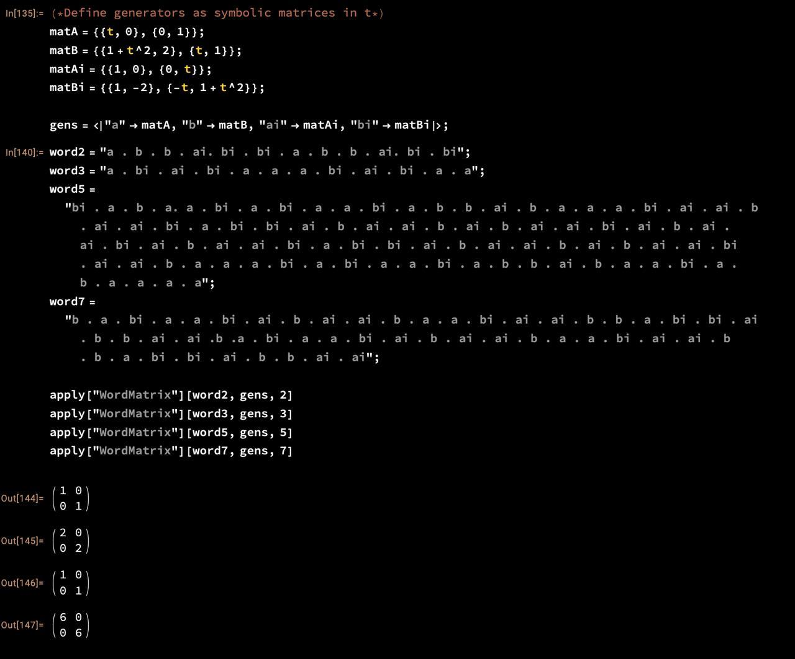
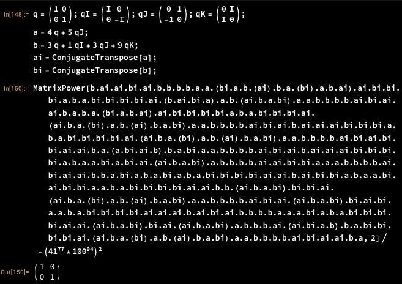
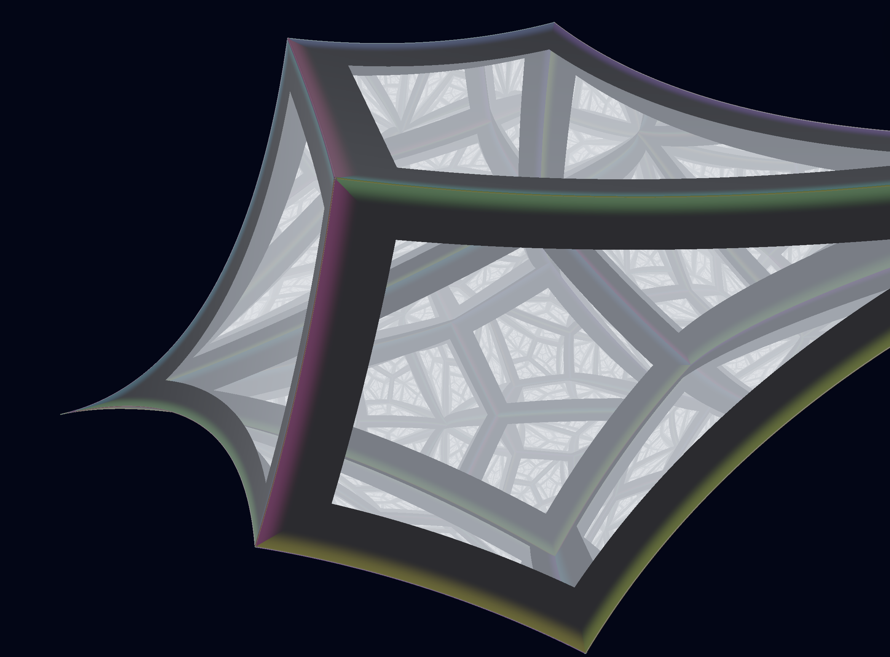
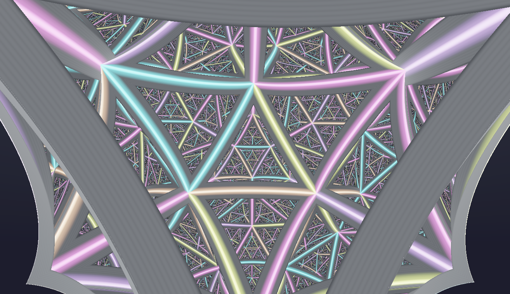
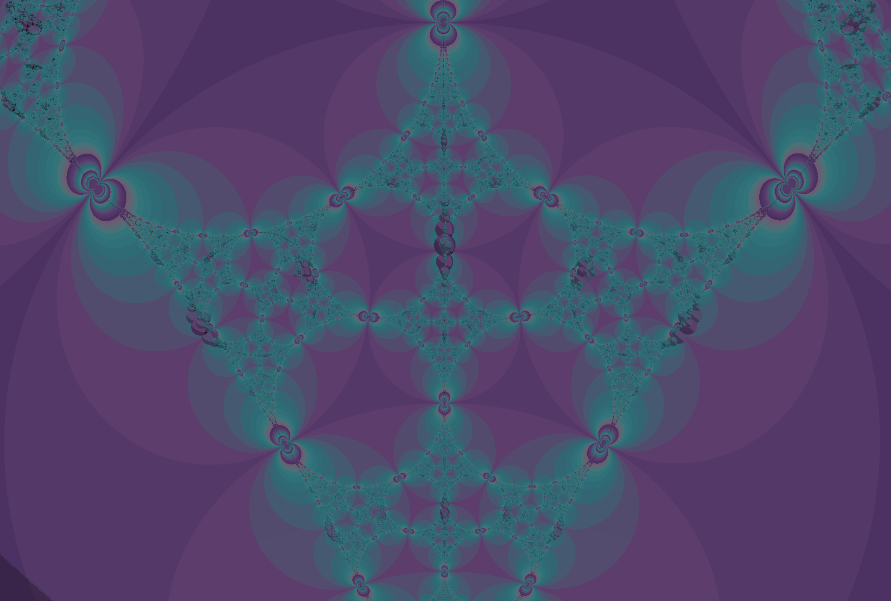

Can a surface group act properly on a locally compact product of trees?
GALLERY33
Surface Groups and Products of Trees
Chapter I
Background
Background
Suppose that \(G\) is a finitely generated group, and \(X\) is a proper metric space.
- When does \(G\) act faithfully on \(X\)?
- When does \(G\) act properly on \(X\)?
More broadly, given a group \(G\) can we classify the metric spaces \(X\) on which \(G\) acts? Or given a space, can we classify the groups that can act on it?
Background
Examples
If \(X\) is a tree, then any group which acts properly on \(X\) is virtually free.
If \(G\) is a lattice in a higher rank Lie group, then Margulis superrigidity gives extremely strong constraints on the possible spaces \(X\).
The virtual cohomological dimension of a group gives a lower bound on the dimension of the spaces on which it can act nicely.
Background
Questions
Now suppose that \(G\) is the fundamental group of a finite-volume hyperbolic \(n\)-manifold. Can \(G\) ever act faithfully on a lower-dimensional hyperbolic space? Can it act properly on a product of such spaces?
In the absence of superrigidity, we don't have an immediate obstruction to faithful actions. And by taking products of lower-dimensional spaces, there's not an obvious way that virtual cohomological dimension would prevent proper actions.
Background
Background · Visualization
Orbifold Quotient
A torus with a cone point of order 2, whose fundamental group is \(\langle a,b \mid [a,b]^2 = 1\rangle\).
Interactive visualization →
Background · Visualization
Product of Trees
A discrete group acting on a product of two trees, visualized as a lattice in the product.
Interactive visualization →
Background · Visualization
Mountain Climbers
The mountain climber story describes a map of a genus two surface into a product of graphs.
Interactive visualization →
Background
Mountain Climbers
The mountain climber story describes a map of a genus two surface into a product of graphs, and consequently, an action of a surface group on a product of trees.
However, this action is not faithful! In fact, the action comes from a map to a product of free groups, and finitely presented subgroups of products of free groups are products of free groups.
This means the map has kernel. This CAN be rectified by using infinitely many free groups, and we can actually get a proper action on an infinite product of trees!
Chapter II
Geometry
Geometry · Visualization
Iterated Circle Map
Visualizing the action of \(\PGL_2\) on the projective line via iterated compositions.
Interactive visualization →
Geometry · Visualization
p-adic Tower
The Bruhat–Tits tree for \(\PGL_2(\Q_p)\), built as a tower of covers.
Interactive visualization →
Geometry · Visualization
p-adic Action
How elements of \(\PGL_2(\Q_p)\) act on the Bruhat–Tits tree.
Interactive visualization →
Geometry
Arithmetic Methods
The Minkowski embedding allows us to find discrete embeddings of subrings of \(\overline{\Q}\) into products of fields. In turn, we obtain actions on locally compact spaces. For example
This gives us a discrete action of \(\PGL_2(\Q)\) on \(\bbH^2 \times \prod_{p}' T_{p+1}\).
Chapter III
Actions
Actions
Three Approaches
Suppose \(\Gamma\) is a surface group. We will try to find a discrete and faithful representation of \(\Gamma\) into \(\Aut(\bbX)\), where \(\bbX\) is a product of trees.
- \(\Gamma\leq \PGL_2(\Q)\) with \(\Gamma\cap \PGL_2(\Z)=I\)
- \(\Gamma\leq \PGL_2(\bbF_p(t))\)
- \(\Gamma \leq \mathsf{SO}_3(\Q)\)
Actions
Long-Reid Group
Let \(\Gamma=\langle a,b\mid [a,b]^2=1\rangle\); this is the fundamental group of an orbifold which is a torus with a cone point of order 2. We get a representation of \(\Gamma\) into \(\PGL_2(\Q(t))\) by taking
Specializing \(t\in\Q\), we can obtain a subgroup of \(\PGL_2(\Q)\). This determines a proper action on a product of trees if and only if the representation is faithful and \(\Gamma_t\cap \PGL_2(\Z)\) is finite.
The particular case \(t=9\) gives a surface group acting on the product of the 2-adic and 3-adic trees.
Actions
Fisher-Larsen-Spatzier-Stover
Suppose \(\Gamma\leq \PGL_2(\bbF_p(t))\) is a surface group. Since \(\Gamma\) is finitely generated, it is contained in \(\PGL_2(A)\) for some finitely generated subring \(A\) of \(\bbF_p(t)\). Such a ring is of the form \(A=\bbF_p[t,\frac{1}{f_1},...,\frac{1}{f_k}]\) for some irreducible polynomials \(f_i\in \bbF_p[t]\).
We can obtain a representation of \(\Gamma\) into \(\PGL_2(\bbF_p(t))\) by taking a representation of \(\Gamma\) into \(\PGL_2(\Q(t))\) which is \(p\)-integral, and composing with the reduction map to \(\bbF_p(t)\). If we can find a faithful such representation, we've succeeded!
Actions
Totally Unitary Representations
Suppose \(k\) is a number field, and \(\Gamma\) is a group. We say that a representation \(\rho\colon \Gamma\to \PGL_2(k)\) is totally unitary if for every archimedean place \(v\colon k\to \C\), \(\rho(\Gamma)\) is precompact.
Let \(\rho\colon \Gamma\to \PGL_2(k)\) be a faithful totally unitary representation. Then \(\rho\) induces a proper action of \(\Gamma\) on a locally compact product of trees.
Actions
Example Representation
Thus, if we can find a faithful and totally unitary surface group representation, we've succeeded!
We try to find surface subgroups of \(\mathsf{PU}_2(\Q(i))\). Let's seek matrices \(g=\begin{pmatrix} x & y \\ -y & x\end{pmatrix}\) and \(h=\begin{pmatrix} a+bi & c+di \\ -c+di & a-bi\end{pmatrix}\) where \([g,h]\) has trace zero.
We find a particular integer solution \(x=4,\; y=5,\; a=3,\; b=1,\; c=3,\; d=9\), giving
Indeed, the commutator has trace zero:
Chapter IV
Computation
Computation
Suppose that \(G\) is a finitely generated group, and \(C\colon G\to \R_{\geq0}\) is a cost function.
For example, the cost might be a norm on the group, or the size of the denominator of an element.
We want to somehow efficiently navigate the group to find elements with small cost.
Computation
Breadth-First Search
Explore the Cayley graph layer by layer.
- Pros: Guaranteed to find a solution if one exists.
- Cons: Each successive iteration takes \(|S|\) times longer than the previous one.
Computation
Greedy Algorithms
Always extend the "best" candidate according to the cost function \(C\).
- Pros: Extremely fast — we only keep track of one element at a time.
- Cons: Nearly guaranteed to fail.
Computation
Beam Search
We first choose a beam width \(W\). We initialize the beam \(B_0=\{I\}\).
Given the current beam \(B_n\), we first build the set \(B_{n+1}'=B_n\cdot S\), the extended beam. We then prune this set to \(B_{n+1}\) by taking the top \(W\) elements with the smallest cost. Let \(\mathsf{WMin}(X)\) denote this operation.
- Pros: An excellent compromise of speed and success rate. Each iteration takes a constant amount of time.
- Cons: If the minimal length of a successful word is \(k\), we will require at least \(k\) iterations.
Computation
FlashBeam Search
We first choose a beam width \(W\) and a flash size \(F\). We initialize the flash \(F_0\) to consist of the generating set, and set \(B_0 = \{I\}\).
Given the current beam \(B_n\) and flash \(F_n\), we define the extended beam \(B_{n+1}\) to be the set of elements of the form \(w \cdot s\) where \(w \in B_n\) and \(s \in F_n\).
We then prune the extended beam by taking the top \(W\) elements with the smallest cost, and prune the flash by taking the \(F\) elements with the smallest cost.
- Pros: This can find a solution of length \(k\) in \(\log k\) iterations.
- Cons: A large flash size slows down the algorithm.
Computation
FlashBeam Search
We can think of the flashbeam search as exploring the Cayley graph of the group, but the generators vary as we explore it!
This can be useful in finding "optimal" generators for a group, such as computing Dirichlet domains.
Computation · Comparison
Search Comparison
A comparison of BFS, Greedy, Beam Search, and FlashBeam on a group search problem.
Animated comparison →
Computation · Visualization
Dirichlet Domain
FlashBeam constructs an approximate Dirichlet fundamental domain by iteratively finding group elements close to the basepoint.
Interactive visualization →
Chapter V
Conclusions
Conclusions
Results
The FlashBeam search succeeds in finding:
- an integer matrix in the Long-Reid group
- relations in the Fisher-Larsen-Spatzier-Stover groups, for many small primes
- a relation in the totally unitary group
- a relation in a representation of \(\Z^2 * \Z\)
- a relation in the \(t=2\) Burau representation of \(B_4\)
- and more...


Conclusions · Visualization
Kernel Braid
The kernel element found by FlashBeam in the \(t=2\) Burau representation of \(B_4\), visualized as a braid.
Interactive visualization →
Conclusions
Open Questions
We consider this as fairly discouraging evidence for the general approach. Indeed, we suspect that none of these approaches will ever work!


Conclusions
Suppose \(k\) is a number field and \(\bbG\) is a simple \(k\)-algebraic group. A subgroup \(\Gamma \leq \bbG(k)\) is:
\(\bullet\) algebraic if \(\Gamma\) is contained in \(\bbH(\Q)\lneq\mathsf{Res}_{k/\Q}(\bbG)(\Q)\) for some proper algebraic subgroup of \(\bbG(k)\).
\(\bullet\) geometric if there is some place \(v\) such that \(\Gamma\) is discrete in \(\bbG(k_v)\).
\(\bullet\) arithmetic if \(\Gamma\) is commensurable with \(\bbG(A)\) for some subring \(A \leq k\).
Conj: Every subgroup \(\Gamma\) is either algebraic, geometric, or arithmetic.
Thank You!
